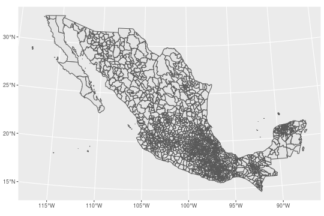
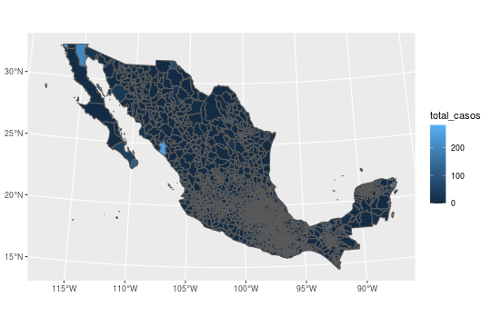
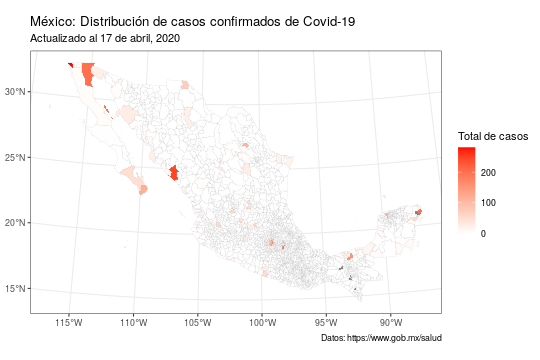
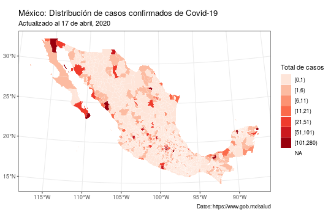
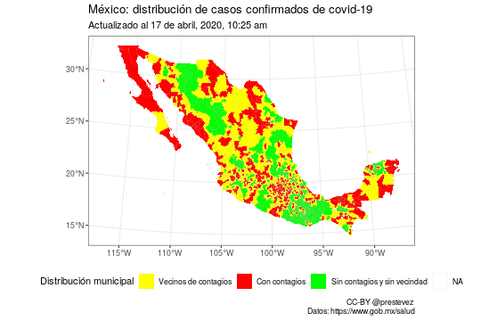

Cómo hacer mapas con R y tidyverse

Hace unos días publiqué un par de mapas en twitter sobre la distribución geográfica de los casos confirmados de la enfermedad covid-19 en México. Me preguntaron en qué software hice los mapas y me pareció una buena oportunidad para escribir un breve tutorial sobre como hacer mapas en R.
Nuevos mapas sobre covid-19 en México. Pueden descargar png y pdf en alta resolución en:https://t.co/tHEBkwOxPZ pic.twitter.com/LV28r9iGm8
— Patricio R. Estevez-Soto, PhD (@prestevez) 17 de abril de 2020
Este tutorial asume que sabes usar R. No necesitas ser experto, pero un conocimiento básico de R es necesario. También recomiendo saber usar los paquetes de tidyverse, especialmente ggplot2 y dplyr.
Si aún no usas R, puedes aprovechar la cuarentena forzada por covid-19 para aprender.
Por qué usar R cuando existe QGIS o ArcGIS
Normalmente, la visualización y análisis de mapas (y otra información geográfica) se hace usando programas llamados sistemas de información geográfica (conocidos como GIS en inglés). Entre los más conocidos está ArcGIS (probablemente el gold standard de GIS, aunque es software de paga). En el mundo de software libre una alternativa muy completa es QGIS.
R es principalmente un programa de análisis estadístico; no es un GIS. Los GIS son programas muy complejos. Quienes trabajan con datos geográficos cotidianamente probablemente sean más productivos usando un GIS.
Sin embargo, también son programas un tanto pesados y que demandan recursos importantes de tu computadora. Por tanto, si quieres hacer un mapa relativamente sencillo, a veces puede ser más fácil hacerlo en R.
Una segunda ventaja de usar R es que, al ser un lenguaje de programación, es más fácil trabajar de forma sistemática y generar mapas y análisis que sean reproducibles—una consideración importante especialmente en estudios científicos. En otros GIS también es posible usar scripts de programación, pero la principal forma de interactuar con estos programas es a través de la interfaz gráfica, mientras que en R la interacción es a través de código.
R + sf + tidyverse
Existen varios paquetes para trabajar con datos espaciales en R. Yo trabajo principalmente con un paquete nuevo llamado sf (por simple features un estándar para representar información geográfica).
Una gran ventaja de sf es que los objetos de esta clase son compatibles con los paquetes del universo tidyverse. La colección de paquetes del tidyverse ofrece muchas ventajas para manipular, analizar y visualizar datos, en especial los verbos de dplyr y el paquete para graficar ggplot2.
Si ya trabajas con tidyverse, hacer mapas con sf te va a parecer extremadamente sencillo e intuitivo.
Instalación y carga de paquetes
Si no tienes instalado tidyverse o sf, puedes hacerlo con el siguiente comando:
install.packages("tidyverse")
install.packages("sf")
Ojo, instalar tidyverse es sencillo, pero sf puede ser más complicado. Esto es porque sf necesita interactuar con librerías especiales para el manejo de datos espaciales. La instalación de estas librerías dependerá del tipo de sistema que utilices (Windows, macOS, Linux). Visita la página de sf para más información.
Una vez que los paquetes están instalados, procedemos a cargarlos en nuestra sesión en R:
library(tidyverse)
library(sf)
Un mapa básico
Para generar cualquier mapa lo primero es cargar un objeto espacial. En este caso utilizo un shapefile de los municipios de México que me paso un amigo en twitter. En este caso utilicé este archivo pues el marco geoestadístico oficial del INEGI pesa más de 3 GB y se tardaría demasiado en descargar.
Para cargarlo en la memoria corremos los siguientes comandos. El primero crea una carpeta llamada datos_covid en nuestra carpeta de trabajo (?getwd), el segundo descarga de un repositorio en GitHub un archivo comprimido que contiene el shapefile que vamos a utilizar. El tercer comando extrae el archivo en la carpeta datos_covd, y finalmente el cuarto carga el shapefile en R.
# Crear carpeta donde descargar el archivo
dir.create("datos_covid/")
Warning in dir.create("datos_covid/"): 'datos_covid' already exists
# Descarga el archivo zip de github
download.file(url = "https://github.com/prestevez/covid-19-mx-map/raw/master/datos_covid/01_32_mun.zip",
destfile = "datos_covid/01_32_mun.zip")
# Extrae el archivo zip en la carpeta datos_covid
unzip("datos_covid/01_32_mun.zip",
exdir = "datos_covid/")
# Carga el archivo shapefile a R
mex_map <- st_read("datos_covid/01_32_mun.shp")
Reading layer `01_32_mun' from data source `/home/rstudio/local/datos_covid/01_32_mun.shp' using driver `ESRI Shapefile'
Simple feature collection with 2463 features and 4 fields
geometry type: MULTIPOLYGON
dimension: XY
bbox: xmin: 911292 ymin: 319149.1 xmax: 4082997 ymax: 2349615
proj4string: +proj=lcc +lat_1=17.5 +lat_2=29.5 +lat_0=12 +lon_0=-102 +x_0=2500000 +y_0=0 +ellps=GRS80 +units=m +no_defs
Una vez cargado el archivo, crear un mapa es tan sencillo como generar una gráfica con ggplot2:
mex_map %>%
ggplot() + # Crea un objeto ggplot a partir del objeto mex_map
geom_sf() # agrega una capa con el mapa

A diferencia de objetos espaciales generados por otros paquetes en R, generar el mapa no requiere especificar valores x o y, ajustar coordenadas ni nada por el estilo. A partir de la versión 3.0.0 de ggplot2, se puede graficar mapas de objetos sf nativamente utilizando la función geom_sf().
Mapa de coropletas
Ahora que sabemos generar un mapa básico en R, vamos a crear un mapa temático o coroplético con la distribución de casos confirmados de covid-19 en los municipios de México.
Para comenzar, revisemos la estructura básica del objeto mex_map:
mex_map
Simple feature collection with 2463 features and 4 fields
geometry type: MULTIPOLYGON
dimension: XY
bbox: xmin: 911292 ymin: 319149.1 xmax: 4082997 ymax: 2349615
proj4string: +proj=lcc +lat_1=17.5 +lat_2=29.5 +lat_0=12 +lon_0=-102 +x_0=2500000 +y_0=0 +ellps=GRS80 +units=m +no_defs
First 10 features:
CVEGEO CVE_ENT CVE_MUN NOMGEO geometry
1 01001 01 001 Aguascalientes MULTIPOLYGON (((2489073 111...
2 01002 01 002 Asientos MULTIPOLYGON (((2494680 114...
3 01003 01 003 Calvillo MULTIPOLYGON (((2429607 112...
4 01004 01 004 Cosío MULTIPOLYGON (((2470518 115...
5 01005 01 005 Jesús María MULTIPOLYGON (((2465527 111...
6 01006 01 006 Pabellón de Arteaga MULTIPOLYGON (((2473997 112...
7 01007 01 007 Rincón de Romos MULTIPOLYGON (((2476760 115...
8 01008 01 008 San José de Gracia MULTIPOLYGON (((2463680 112...
9 01009 01 009 Tepezalá MULTIPOLYGON (((2481572 114...
10 01010 01 010 El Llano MULTIPOLYGON (((2496975 111...
Una de las gran ventajas de los objetos sf es que guardan la información geográfica como un tabla (específicamente como un data.frame). La primera parte del output en la consola es la información geográfica del objeto: el tipo de geometría (punto, línea, polígono o multipolígono), tamaño, y proyección cartográfica. La segunda son las primeras 10 líneas del data.frame en el que cada línea es un municipio, la columna geometry contiene la información geográfica de cada polígono municipal, y el resto de columnas contiene información de cada municipio—en este caso la claves geoestadísticas y el nombre.
Esto significa que para poder crear el mapa coroplético sería tan sencillo como tener una columna con el número de casos por municipios.
Para esto cargamos un archivo csv con el número de casos confirmados por municipios que publica la secretaría de salud de México. (Para asegurar que este código siga vigente voy a utilizar la tabla de casos confirmados del 16 de abril de 2020 que tengo en GitHub).
datos_mun <- read_csv("https://raw.githubusercontent.com/prestevez/covid-19-mx-map/master/datos_covid/Casos_Diarios_Estado_Nacional_Confirmados.csv")
Parsed with column specification:
cols(
.default = col_double(),
cve_ent = col_character(),
nombre = col_character()
)
See spec(...) for full column specifications.
datos_mun
# A tibble: 2,457 x 54
cve_ent poblacion nombre `26-02-2020` `27-02-2020` `28-02-2020` `29-02-2020` `01-03-2020` `02-03-2020`
<chr> <dbl> <chr> <dbl> <dbl> <dbl> <dbl> <dbl> <dbl>
1 01001 961977 Aguas… 0 0 0 0 0 0
2 01002 50864 Asien… 0 0 0 0 0 0
3 01003 60760 Calvi… 0 0 0 0 0 0
4 01004 16918 Cosio 0 0 0 0 0 0
5 01005 130184 Jesus… 0 0 0 0 0 0
6 01006 50032 Pabel… 0 0 0 0 0 0
7 01007 57981 Rinco… 0 0 0 0 0 0
8 01008 9661 San J… 0 0 0 0 0 0
9 01009 22743 Tepez… 0 0 0 0 0 0
10 01010 21947 El Ll… 0 0 0 0 0 0
# … with 2,447 more rows, and 45 more variables: `03-03-2020` <dbl>, `04-03-2020` <dbl>, `05-03-2020` <dbl>,
# `06-03-2020` <dbl>, `07-03-2020` <dbl>, `08-03-2020` <dbl>, `09-03-2020` <dbl>, `10-03-2020` <dbl>,
# `11-03-2020` <dbl>, `12-03-2020` <dbl>, `13-03-2020` <dbl>, `14-03-2020` <dbl>, `15-03-2020` <dbl>,
# `16-03-2020` <dbl>, `17-03-2020` <dbl>, `18-03-2020` <dbl>, `19-03-2020` <dbl>, `20-03-2020` <dbl>,
# `21-03-2020` <dbl>, `22-03-2020` <dbl>, `23-03-2020` <dbl>, `24-03-2020` <dbl>, `25-03-2020` <dbl>,
# `26-03-2020` <dbl>, `27-03-2020` <dbl>, `28-03-2020` <dbl>, `29-03-2020` <dbl>, `30-03-2020` <dbl>,
# `31-03-2020` <dbl>, `01-04-2020` <dbl>, `02-04-2020` <dbl>, `03-04-2020` <dbl>, `04-04-2020` <dbl>,
# `05-04-2020` <dbl>, `06-04-2020` <dbl>, `07-04-2020` <dbl>, `08-04-2020` <dbl>, `09-04-2020` <dbl>,
# `10-04-2020` <dbl>, `11-04-2020` <dbl>, `12-04-2020` <dbl>, `13-04-2020` <dbl>, `14-04-2020` <dbl>,
# `15-04-2020` <dbl>, `16-04-2020` <dbl>
La tabla con casos confirmados de covid-19 por municipio contiene una línea por municipio, columnas con la clave geoestadística, población, el nombre y una columna por día de observación. Como queremos una columna con el número de casos por municipio, necesitamos agregar las columnas de cada día:
casos_municipio <- datos_mun %>%
# pasamos del formato ancho al largo
pivot_longer(-c(cve_ent, poblacion, nombre),
names_to = "día",
values_to = "casos") %>%
# agrupamos por municpio
group_by(cve_ent, poblacion, nombre) %>%
# sumamos los casos
summarise(total_casos = sum(casos))
casos_municipio
# A tibble: 2,457 x 4
# Groups: cve_ent, poblacion [2,457]
cve_ent poblacion nombre total_casos
<chr> <dbl> <chr> <dbl>
1 01001 961977 Aguascalientes 60
2 01002 50864 Asientos 1
3 01003 60760 Calvillo 0
4 01004 16918 Cosio 0
5 01005 130184 Jesus Maria 1
6 01006 50032 Pabellon de Arteaga 5
7 01007 57981 Rincon de Romos 2
8 01008 9661 San Jose de Gracia 0
9 01009 22743 Tepezala 1
10 01010 21947 El Llano 1
# … with 2,447 more rows
Ahora hay que unir la tabla con el total de casos por municipio a la tabla con la información geográfica. Para unir dos tablas (ej: A y B) necesitamos tener una columna que nos indique qué observación en la tabla A corresponde a la observación de la tabla B. En este caso ambas tablas tienen una columna con la clave geostadística única para cada municipio. Unimos las tablas con este código:
mex_map_covid <- mex_map %>%
# unir tablas
left_join(casos_municipio,
# indicar explícitamente las columnas índice,
# necesario cuando no tienen el mismo nombre
by = c("CVEGEO" = "cve_ent"))
Warning: Column `CVEGEO`/`cve_ent` joining factor and character vector, coercing into character vector
mex_map_covid
Simple feature collection with 2463 features and 7 fields
geometry type: MULTIPOLYGON
dimension: XY
bbox: xmin: 911292 ymin: 319149.1 xmax: 4082997 ymax: 2349615
proj4string: +proj=lcc +lat_1=17.5 +lat_2=29.5 +lat_0=12 +lon_0=-102 +x_0=2500000 +y_0=0 +ellps=GRS80 +units=m +no_defs
First 10 features:
CVEGEO CVE_ENT CVE_MUN NOMGEO poblacion nombre total_casos
1 01001 01 001 Aguascalientes 961977 Aguascalientes 60
2 01002 01 002 Asientos 50864 Asientos 1
3 01003 01 003 Calvillo 60760 Calvillo 0
4 01004 01 004 Cosío 16918 Cosio 0
5 01005 01 005 Jesús María 130184 Jesus Maria 1
6 01006 01 006 Pabellón de Arteaga 50032 Pabellon de Arteaga 5
7 01007 01 007 Rincón de Romos 57981 Rincon de Romos 2
8 01008 01 008 San José de Gracia 9661 San Jose de Gracia 0
9 01009 01 009 Tepezalá 22743 Tepezala 1
10 01010 01 010 El Llano 21947 El Llano 1
geometry
1 MULTIPOLYGON (((2489073 111...
2 MULTIPOLYGON (((2494680 114...
3 MULTIPOLYGON (((2429607 112...
4 MULTIPOLYGON (((2470518 115...
5 MULTIPOLYGON (((2465527 111...
6 MULTIPOLYGON (((2473997 112...
7 MULTIPOLYGON (((2476760 115...
8 MULTIPOLYGON (((2463680 112...
9 MULTIPOLYGON (((2481572 114...
10 MULTIPOLYGON (((2496975 111...
Una vez unidas las tablas, podemos hacer el mapa de coropletas con este código:
mex_map_covid %>%
# usamos el aesthetic fill para indicar la columna de casos
ggplot(aes(fill = total_casos)) +
geom_sf()

El mapa funciona, pero no es particularmente atractivo. En particular las líneas de los polígonos municipiales están muy gruesas y el color del mapa no es útil para conocer la distribución de casos. Como este es un objeto de ggplot2 podemos cambiar toda la estética del mapa con mucha facilidad.
mex_map_covid %>%
# usamos el aesthetic fill para indicar la columna de casos
ggplot(aes(fill = total_casos)) +
# cambia el color y el grosor de las líneas
geom_sf(colour = "grey75", size = 0.07) +
# agrega títulos
labs(title = "México: Distribución de casos confirmados de Covid-19",
subtitle = "Actualizado al 17 de abril, 2020",
caption = "Datos: https://www.gob.mx/salud") +
# cambia el color de relleno y el título de la leyenda
scale_fill_gradient("Total de casos", high = "red", low = "white") +
# retirar el fondo gris
theme_bw()

Algo evidente es que la gran mayoría de los municipios en México no tiene casos de covid-19. Por tanto, al utilizar una escala continua el mapa no es muy informativo. Para mejorar la visualización podemos cambiar la variable de casos a categorías discretas. Podemos usar la función cut para generar automáticamente los cortes.
# vector con los puntos de corte
brks <- c(0,1,6,11,21,51,101,
max(mex_map_covid$total_casos, na.rm = TRUE))
mex_map_covid %>%
# usamos dplyr para generar una nueva columna
mutate(casos_cut = cut(total_casos, breaks = brks, right = FALSE)) %>%
# usamos el aesthetic fill para indicar la columna de casos_cut
ggplot(aes(fill = casos_cut)) +
# cambia el color y el grosor de las líneas
geom_sf(colour = "white", size = 0.07) +
# agrega títulos
labs(title = "México: Distribución de casos confirmados de Covid-19",
subtitle = "Actualizado al 17 de abril, 2020",
caption = "Datos: https://www.gob.mx/salud") +
# cambia el color de relleno, nota que es una función distinta
scale_fill_brewer("Total de casos", palette = "Reds") +
# retirar el fondo gris
theme_bw()

Noten que el mapa arrojó que algunos municipios no tenían un valor válido (NA). Esto se debe a que la base de datos de la secretaría de salud no contiene a todos los municipios del país.
El shapefile tiene 2463 municipios, mientras que la tabla de casos tiene 2457 municipios. Por lo que a la hora de unir las tablas a los municipios sin conteo correspondiente se les asignó un valor NA.
Procesamiento geográfico, encontrando vecinos
El 16 de abril la secretaría de salud presentó un mapa de “riesgo” de la transmisión de covid-19 en el país. Este mapa pintaba de rojo a los municipios con contagios, de amarillo a los municipios vecinos de municipios con contagios, y de verde a los municipios sin contagios y sin vecinos con contagios.
Según lo que presentó @HLGatell, en los 979 municipios en verde se podría "regresar a la normalidad" el 17 de mayo.
— Patricio R. Estevez-Soto, PhD (@prestevez) 16 de abril de 2020
Para poner esto en perspectiva, en estos municipios viven más o menos 11.2 millones de personas, menos del 8.74% de la población. pic.twitter.com/s7jbYfPVWT
Para elaborar este mapa necesitamos más información de la que tenemos. En específico, necesitamos determinar qué municipios son vecinos de los municipios con contagios. Este tipo de operaciones se les conoce como operaciones de procesamiento geográfico. El paquete sf contiene funciones que nos permite realizar este tipo de operaciones sin mucho problema.
En este caso, el procedimiento que podríamos hacer es:
- Identificar a los municipios con contagios.
- Identificar a los vecinos de municipios con contagios.
- Por eliminación, identificar a los municipios sin vecinos y sin contagios.
Realizamos los primeros dos pasos con este código.
mex_map_covid %>%
# seleccionamos a los municipios con por lo menos un caso
filter(total_casos > 0) -> mex_map_covid_contagio
mex_map_covid %>%
# Econtramos los vecinos
st_intersects(mex_map_covid_contagio) -> vecinos_covid
vecinos_covid
Sparse geometry binary predicate list of length 2463, where the predicate was `intersects'
first 10 elements:
1: 1, 2, 3, 7, 151
2: 1, 2, 4, 6, 7
3: 1, 3
4: 5
5: 1, 3, 4
6: 2, 3, 4, 5, 6
7: 4, 5, 6
8: 3, 4, 5
9: 2, 4, 5, 6
10: 1, 2, 7, 151
El objeto vecinos_covid es una matriz de colindancia. Para cada municipio del país, nos dice qué municipios con contagio son vecinos. Los municipios sin contagios y sin vecinos con contagio tienen una observación de longitud zero, lo que nos ayuda a seleccionarlos.
sin_vecinos_o_covid <- lengths(vecinos_covid) < 1
Finalmente, utilizamos esta información para crear una nueva columna para crear el mapa.
mex_map_covid <-
mex_map_covid %>%
# creamos una columna nueva llamada covid, en la que el 1 indica contagios
mutate(covid = ifelse(total_casos > 0, 1, 0))
# Cambiamos a 2 en la columna covid los municipios sin vecinos o contagios
mex_map_covid[sin_vecinos_o_covid, ]$covid <- 2
# Cambiamos la columna covid de número a factor con categorías.
mex_map_covid %>%
mutate(covid = factor(covid,
labels = c("Vecinos de contagios",
"Con contagios",
"Sin contagios y sin vecindad"))) -> mex_map_covid
mex_map_covid %>%
ggplot(aes(fill = covid)) +
geom_sf(colour = "grey75", size = 0.05) +
scale_fill_manual("Distribución municipal",
values = c("yellow", "red", "green")) +
labs(title = "México: distribución de casos confirmados de covid-19",
subtitle = "Actualizado al 17 de abril, 2020, 10:25 am",
caption = "CC-BY @prestevez \nDatos: https://www.gob.mx/salud") +
theme_bw() +
theme(legend.position = "bottom")

Guardar mapas
Finalmente, si queremos podemos guardar los mapas generados usando la interfaz gráfica, o usando la función ggsave.
mex_map_covid %>%
ggplot(aes(fill = covid)) +
geom_sf(colour = "grey75", size = 0.05) +
scale_fill_manual("Distribución municipal",
values = c("yellow", "red", "green")) +
labs(title = "México: distribución de casos confirmados de covid-19",
subtitle = "Actualizado al 17 de abril, 2020",
caption = "Datos: https://www.gob.mx/salud") +
theme_bw() +
theme(legend.position = "bottom") -> mapa_vecinos
# Guargdar en formato PNG
ggsave("casos_vecindad.png",
mapa_vecinos,
width = 7.5,
height = 5)
# En formato PDF en tamaño carta
ggsave("casos_vecindad.pdf",
mapa_vecinos,
width = 11,
height = 8.5,
device = cairo_pdf)
En estas ligas puedes descargar las versiones en PNG y en PDF.
Espero el tutorial haya sido útil para ti. Si tienes alguna duda o sugerencia, escríbeme en twitter.
Patricio R Estévez-Soto
Profesor-investigador en Ciencias de la Seguridad y el Delito
Mi investigación se enfoca en el fenómeno delictivo en América Latina y el Caribe, específicamente en temas como la delincuencia organizada, la victimización repetida, la prevención del delito, la criminología cuantitativa, y el nexo entre política pública y el delito.